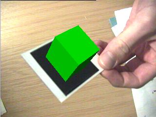
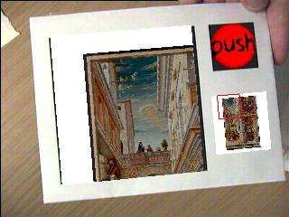

patrick sinclair
Intelligence, Agents and Media Group
Electronics and Computer Science
University of Southampton
The ARToolkit library developed at the University of Washington is designed for the rapid development of Augmented Reality applications. It provides computer vision techniques to calculate a camera's position and orientation relative to marked cards so that virtual 3D objects can be overlaid precisely on the markers.
The screen shots below should give a general idea of what is achievable with the ARToolkit.
[Note: this section is adapted from ARToolkit 2.33 Manual]
Figure 1: Input Video
Figure 2: Thresholded Video
Figure 3: Virtual Overlay
First the live video image (Figure 1) is turned into a binary (black or white) image based on a lighting threshold value (Figure 2). This image is then searched for square regions. ARToolKit finds all the squares in the binary image, many of which are not the tracking markers. For each square, the pattern inside the square is captured and matched again some pre-trained pattern templates. If there is a match, then ARToolKit has found one of the AR tracking markers. ARToolKit then uses the known square size and pattern orientation to calculate the position of the real video camera relative to the physical marker. A 3x4 matrix is filled in with the video camera real world coordinates relative to the card. This matrix is then used to set the position of the virtual camera coordinates. Since the virtual and real camera coordinates are the same, the computer graphics that are drawn precisely overlay the real marker (Figure 3). The OpenGL API is used for setting the virtual camera coordinates and drawing the virtual images.
The diagram below shows the image processing used in ARToolKit in more detail.

Figure 4a: Cube
Figure 4b: Cone
Figure 4c: VRML object
Figure 4d: All together
Objects being overlayed could be from OpenGL applications or VRML worlds. VRML is extremely useful as it can be generated from various 3D software packages, has animation and simple scripting for interactions between objects. As VRML is a text format, it is easy to generate VRML worlds dynamically in many ways.
When an ARToolkit program is run, it is looking for a pre-defined set of markers. Each pre-defined marker is associated with it's own VRML file.
The ARToolKit includes a program to create new markers which can then be associated with VRML files.
Figure 5 shows the IAM logo demonstration. There are three marker cards, each card holds one of the three AR jigsaw pieces on the IAM logo. Placing two cards next to each other in the correct order will join the two pieces. When all three are together in the correct order the three pieces join up.
Figure 5: Putting the IAM jig-saw together (click for video)
See the "Virtual Object Interaction" video on Mark Billinghurst's home page for another example.
This example shows how information could be presented to museum visitors about 3D artifacts. When they find an interesting object, they can just load it up on their card and look at it by holding it in their hand. They could ask for information on the object which would be tailored to their needs.
Figure 6: Triplane with labels over interesting regions
These interactions show how a marker's properties such as it's position or orientation can be used. When the card is tilted down, the text scrolls down. When the card is tilted up, the text scrolls up.
Figure 7: Textbox (click for video)
This idea has been extended to paintings were the image can be scrolled horizontally as well as vertically.

Figure 8: Image Panning (click for video)
Objects could be made to slip off marker cards if the marker card is tilted.
Figure 9: Virtual Object Manipulation in Augmented Reality (VOMAR)
A demonstration of the Virtual Object Manipulation in Augmented Reality (VOMAR) software was presented by Hirokazu Kato from Hiroshima University at ISAR 2000 (International Symposium on Augmented Reality). It introduces a "paddle" which can be used to interact with ARToolkit objects.
Another demonstration was presented by Dr. Ivan Poupyrev and Desnet Tan in a collaboration between the HIT Lab, ATR, Hiroshima City University and DaimlerChrysler AG.users assemble a mock up of an aircraft dashboard using virtual instruments overlaid on real cards.
For more information on these demonstrations, see the ARToolkit news page
http://www.ecs.soton.ac.uk/~pass99r/research
http://www.hitl.washington.edu/projects/shared_space
Patrick Sinclair, 2001